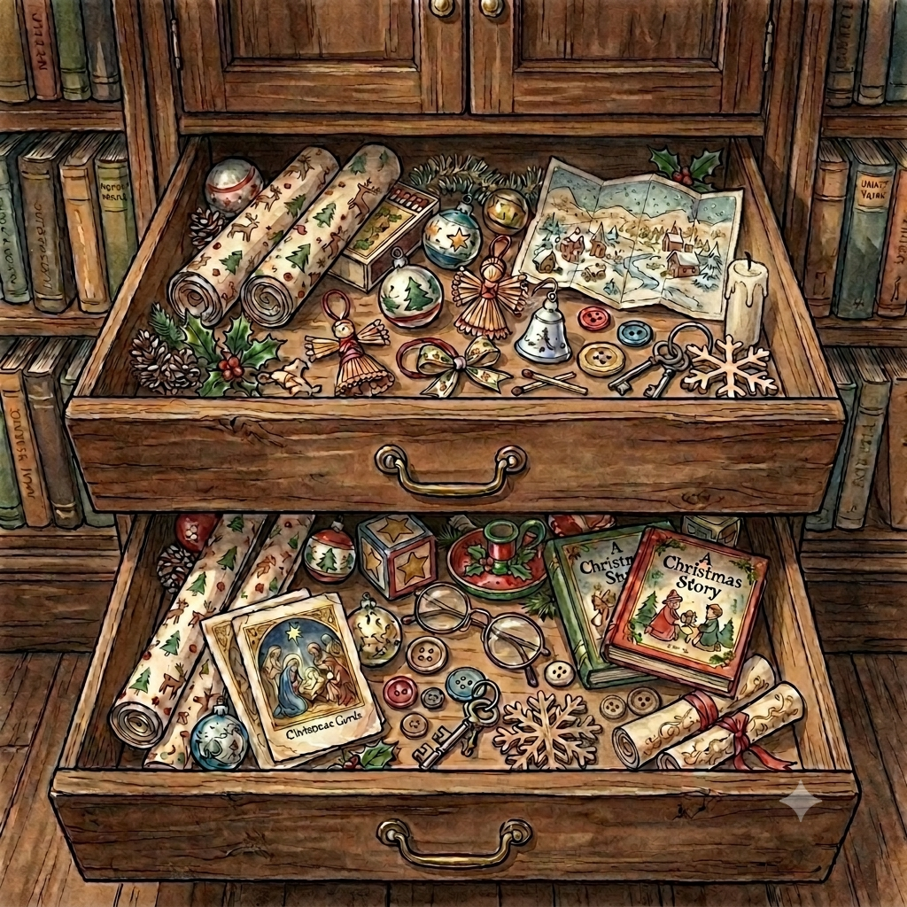

La casa está a oscuras y reina la quietud de la noche. Para encender la primera llama que guiará a la familia, debes buscar las herramientas adecuadas en la casa.
• Explora minuciosamente el interior de los cajones.
• Encuentra: la caja, las cerillas, la candela y su soporte.
Colocas la candela en su soporte, raspas la cerilla con cuidado... ¡La luz vence a las sombras!
Has encontrado todos los objetos. Ahora bajemos en silencio a la habitación de los niños para recuperar los juguetes perdidos...
Solo queda el salón principal. Debemos encontrar los materiales para envolver los regalos.
Has recuperado todos los objetos, preparado los regalos y mantenido viva la llama de la esperanza durante la noche.
Este juego requiere pantalla horizontal para poder explorar correctamente los escenarios.